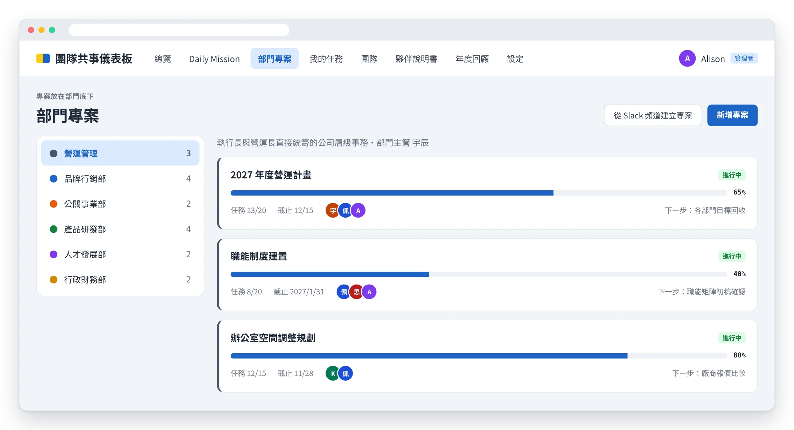
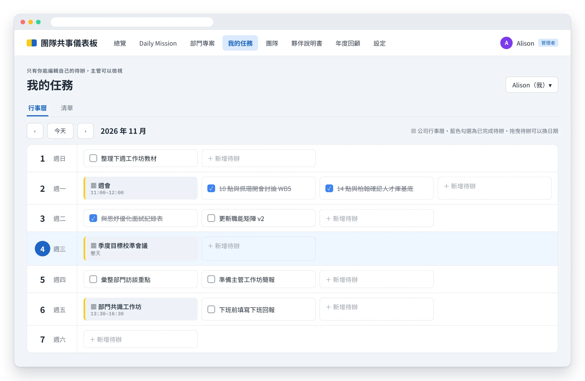
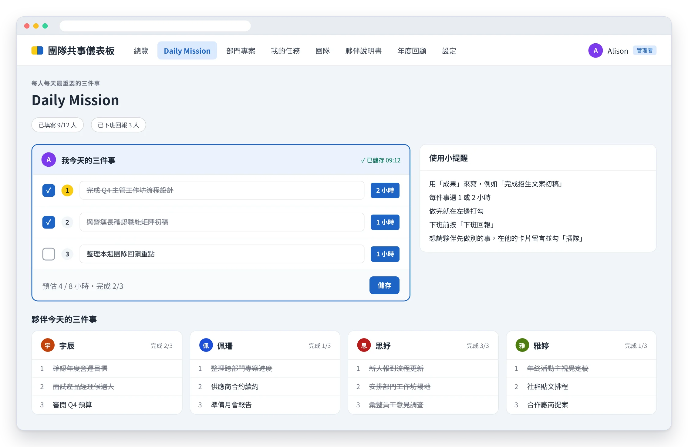
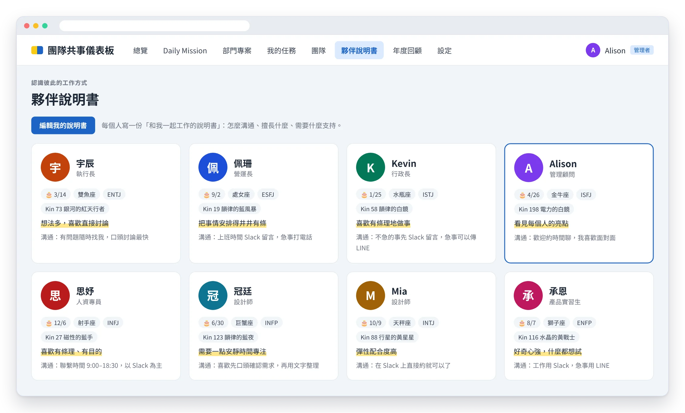
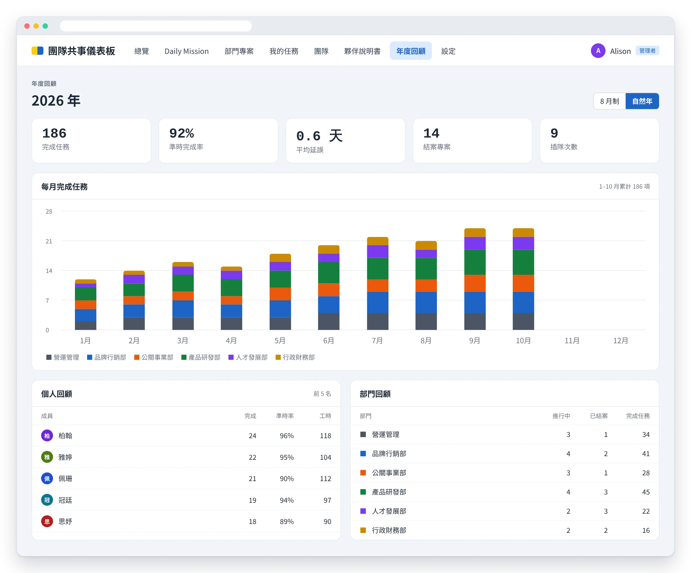
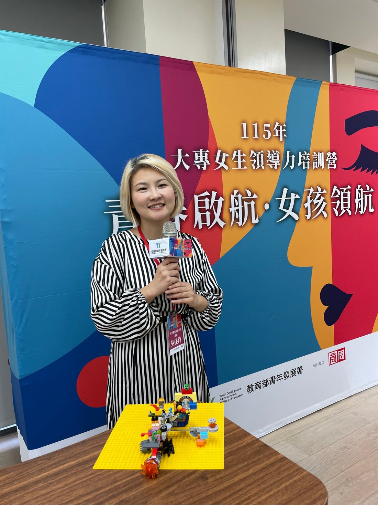
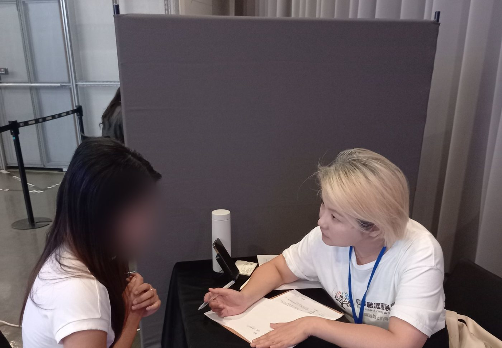

關係的安全感
明明知道會剪壞卻不敢起身？別讓沉默交出你的職涯主導權
一次失敗的剪髮，談職場裡「不敢開口」的代價。
閱讀文章職場安全感的缺口，通常從這三個地方開始。
01 關係的不安
02 角色的不安
03 價值的不安
這些不是個人問題，而是職場安全感出現了缺口。
我在台灣大哥大、PwC 資誠擔任 HR 超過 20 年，經歷過組織重整、大規模人力移轉、勞動爭議處理與留才專案。我很清楚，職場安全感的問題從來不只是「溝通技巧」，它同時牽涉制度、流程、主管與人。
所以我做的不是單純上課，而是先理解你的組織，再對症設計。
主導 2 次組織重整，透過 22 場員工說明會推動變革溝通，轉調率達 98%；導入職場導師制度，離職率下降 3.1%。
用工作流程盤點（WBS）理清事，用人才盤點放對人，用團隊安全感盤點看見關係。
結合 NVC 與蓋洛普優勢，以動畫教材帶入情境，搭配夢想實踐卡、能力亮點卡、思維積木等互動媒材，讓學員在課堂上就練習新的對話方式。
在企業 HR 20 年，懂主管的壓力；在 25 所大專院校授課、帶領 1,000+ 位學員做生涯設計，第一線聽見新世代在意什麼。
制定勞動事件應變流程，處理逾 50 件勞動議題。提出的每個建議，都兼顧人的感受與法規要求，讓企業安心落地。
主導 HRIS 數位化，年省近 7,000 小時工時；以 Power BI 分析離職動因，把「感覺」變成看得見、能追蹤的數字。
20+
年大型企業 HR
100+
位一對一教練個案
1,000+
位學員生涯設計
100+
場授課
25
所大專院校
4.6+
課程滿意度（滿分 5）
我以顧問身分走進企業：先盤點工作流程、建立團隊共事儀表板，同步建構職能制度，再依團隊與個人的優勢提出具體建議。每個方案，都從理解你的組織開始。






讓團隊敢說真話、彼此信任
適合：全體員工、新進人員、跨部門團隊
形式：半日或一日工作坊、系列課程
讓主管聽懂新世代，也讓新世代願意說
適合：中高階主管、新任主管、儲備幹部
形式：工作坊、主管系列課程、一對一教練
先理清事，再放對人，最後看關係
適合：組織調整、成長擴編、離職率偏高的企業
形式：顧問專案，依組織規模客製

關於 Alison
我在企業 HR 待了超過 20 年。在台灣大哥大，我負責直營通路約 2,000 人的人資管理，處理過逾 50 件勞動事件，也陪著上千位第一線同仁走過組織重整。在 PwC 資誠，我負責全所約 4,000 人的 HR 專案。
資誠每年從校園招募超過 500 位社會新鮮人，打造一個讓年輕世代願意學習、成長的環境，是我最重要的任務之一。新人訓練結合 AR 與線上解謎，報到滿意度達 4.73 分（滿分 5）；也從離職訪談與數據中找出人為什麼離開，進而讓離職率下降 3.1%。
這些年我最常看見的，是大家心裡資源的耗損：怕說錯話而不敢開口，不清楚自己的位置而白費力氣，擔心自己不再被需要而默默消耗。這些耗損看不見，卻一點一滴帶走團隊的能量。
任職 HR 期間，我也持續在 25 所大專院校授課，更貼近新世代在想什麼、在意什麼。現在我把這些經驗整合在一起，協助企業建立讓人敢說、放對位置、看見自身價值的職場。
蓋洛普主導天賦
交往．學習．完美．伯樂．體諒
Podcast 主持人
專業認證
電子書
從 57.8 分的警訊，到每週三十分鐘的解方。寫給每一位想把「被看見」帶進日常工作的 HR 與主管。
HR FRIDAY 人資小週末創辦人 盧世安 專文推薦
企業動畫教材｜第一系列
讓性平訓練從「有上課」，變成「有做到」
前導影片｜點擊在 YouTube 播放
每年都辦了性騷擾防治教育訓練，員工卻記不住、主管遇到狀況還是不知道怎麼處理？《性平職場實踐之道》用動畫重現職場中的真實情境，讓訓練真正落地。
教材內容
7 支影片｜總長 60 分鐘
授權方式
一次買斷｜置入企業 Logo
費用
依需求報價
適合：負責性騷擾防治教育訓練的 HR、人資主管、教育訓練負責人，以及正在評估或更新性平教材的企業。
此教材與艾尼斯卡工作室合作製作
從三種安全感，談職場裡看不見的耗損。

給個人的服務
一對一會談，整合蓋洛普優勢與職涯規劃工具，盤點你的能力、經驗與天賦，看見 AI 取代不了的自己，找到下一步的方向。
能夠具體地幫助我理清自己的能力、問題、資源，以及可以解決的方案！把我從鑽牛角尖的泥沼中拉出來！
費用：NT$2,500 / 小時